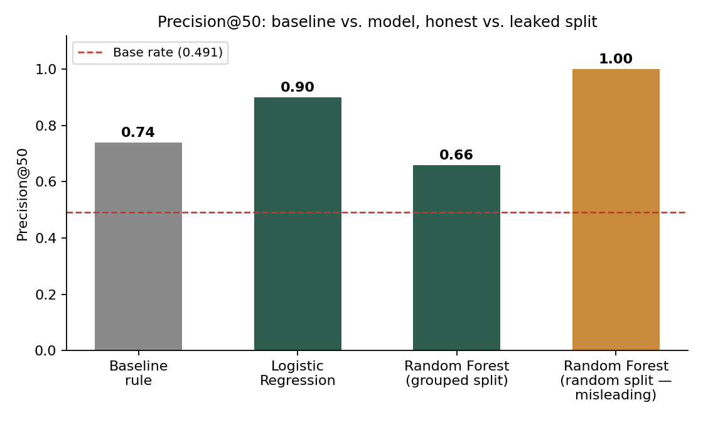
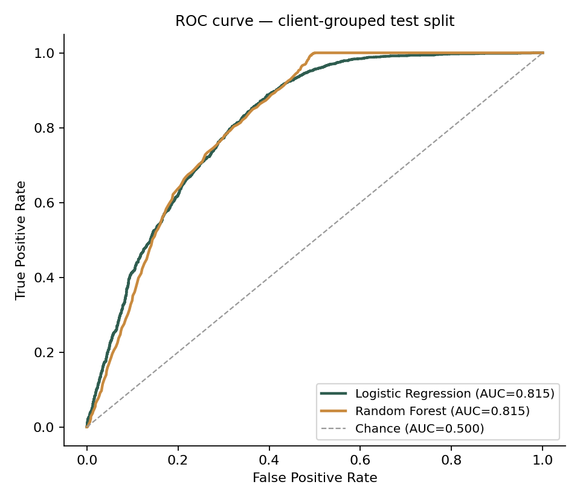
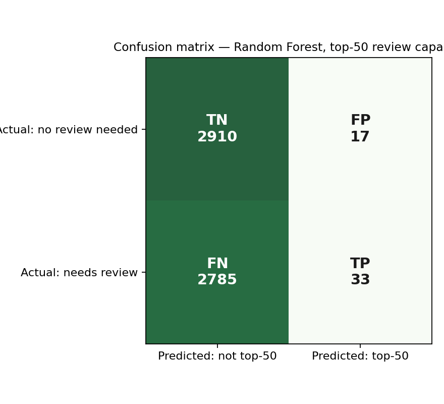
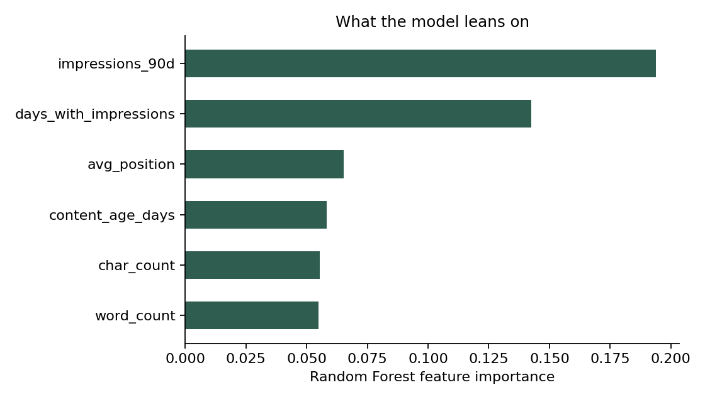
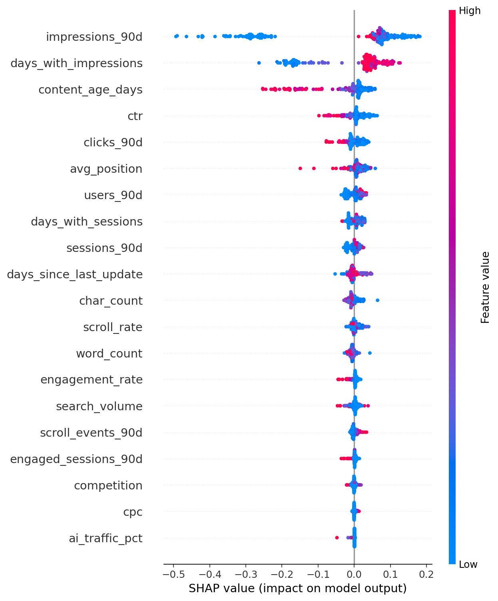

Abstract. Content teams cannot review every page every week — this is the same triage problem behind FlyRank's own internal workflow flags (e.g. "Fix CTR," "Zombie Page"), so which pages should a team look at first? Using a 30,000-page portfolio sample with search performance, freshness, and engagement signals, I built a ranked "refresh priority" model to answer this. A simple, transparent rule (declining traffic + weak click-through) already reached precision@50 of 0.74; a Random Forest trained under an honest, client-grouped validation split reached 0.66 — lower than the rule — while the same model scored a misleading 1.0 under a naive random split, exposing memorization rather than skill. The headline result is therefore not "the model wins," but a validated, decision-support ranking with a clearly measured honesty gap. This output is intended to prioritize a human editor's review queue, not to automate content decisions.
Content portfolios grow faster than editorial teams can review them. An editor with limited weekly capacity needs to know which pages are worth reviewing first — not which pages are "good" or "bad" in the abstract, but which ones combine real search demand with a real, worsening problem. Picking the wrong pages to review has a real cost: reviewing a healthy page wastes scarce time, and missing a genuinely declining high-traffic page lets visibility erode further before anyone notices.
This is the same triage problem behind FlyRank's own internal workflow labels (e.g. "Fix CTR," "Zombie Page") — flags that exist precisely because editors can't review everything. This paper builds a smaller, from-scratch version of that same idea: a transparent baseline rule plus a validated model, ranking pages for review rather than judging content quality in the abstract, and is explicit throughout about what that ranking can and cannot support.
This analysis uses the FlyRank ML Internship starter dataset: 30,000 anonymized content-page records spanning multiple pseudonymized clients, with 90-day search performance (impressions, clicks, average position, CTR), engagement signals (scroll rate, engagement rate), freshness (days since last update, content age), and a computed trend direction (up / down / stable / flat / new) based on 30-day-vs-previous-30-day impression change.
Fields deliberately excluded as model features: trend_direction and
trend_pct — both are direct components of the label I built (see Methodology) and
including them would be circular, label-derived leakage. content_id and
client_id are used only for grouping and joins, never as predictive features. No
client names, URLs, or raw search queries appear anywhere in this analysis, consistent with the
dataset's public-safe design.
I define needs_review = 1 if a page's trend_direction is "down"
AND it has real demand (impressions_90d ≥ 100), else 0. This is an explicit proxy,
not a true future outcome — it describes a currently-observed pattern in a single time window,
not a validated forward-looking event. 43.8% of the full dataset carries this proxy label.
Twenty numeric features — impressions, clicks, sessions, users, engagement metrics, CTR, average position, content age, freshness, and word/char count — all knowable at the moment of scoring, none derived from the label.
A transparent, hand-written rule: flag a page if it is declining with real demand, or visible but under-capturing clicks for its position (CTR < 0.5 at impressions_90d ≥ 500, position 1–20). Score = impressions_90d × (number of flags triggered), so high-traffic flagged pages rank first. Two signals were checked before building this rule:
| Signal | Verdict | Evidence |
|---|---|---|
| Staleness (days_since_update ≥ 180) → decline rate | MIXED | Stale pages actually declined slightly LESS (47.1%, n=174) than fresh pages (54.2%, n=29,826) — opposite of the assumed direction, but the stale group was too small to trust. Dropped from the rule. |
| Low CTR on visible pages → decline rate | CONFIRMED | Low-CTR visible pages declined more (62.7%, n=9,759) than higher-CTR visible pages (47.5%, n=2,264). Kept in the rule. |
Logistic Regression and Random Forest, chosen because the task is a "yes/no with an observed proxy label" problem best started with a readable model and compared against a stronger one.
All model results are reported under a client-grouped split (GroupShuffleSplit by client_id, 75/25), not a random row split. Pages from the same client can share structural similarities that let a model "memorize" a client rather than generalize — the grouped split tests performance on clients the model has never seen, which is the honest test for real deployment on a new client. Zero client overlap between train and test was confirmed programmatically.
I tested the model with and without impressions_90d (the feature most entangled
with the label's threshold condition): precision@50 was identical (0.66) both ways, confirming it
is not silently leaking the label. No product-decision flags exist in this dataset to accidentally
include. All features are current-state measurements, not future-window aggregates.
Beyond built-in Random Forest feature importance, I ran a SHAP (SHapley Additive exPlanations) summary on a 200-row sample of the held-out test set to see not just which features the model leans on, but which direction each pushes a prediction. This is exploratory and descriptive — it explains the model's behavior, not a causal claim about what drives real-world content decline.

Precision@50 across methods, held-out test set, base rate marked at 0.49. The rightmost bar (random split) is shown for contrast only — it is the leaked, non-representative number.

ROC curve, client-grouped test split. Both models separate the classes meaningfully better than chance (AUC 0.815 each) — this is a different, threshold-independent view from precision@50 above, and the two together avoid over-indexing on a single number.
| Method | Split | Precision@50 | ROC-AUC |
|---|---|---|---|
| Baseline rule | Grouped (honest) | 0.74 | — |
| Logistic Regression | Grouped (honest) | 0.90 | 0.815 |
| Random Forest | Grouped (honest) | 0.66 | 0.815 |
| Random Forest | Random (naive) | 1.0 | — |
Same test rows, same metric, computed in the same notebook run as the baseline.

Confusion matrix at the top-50 review-capacity cutoff, Random Forest, honest split. Read this as a triage snapshot, not a general classifier score: with only 50 review slots against 2,818 true positives in the test set, a large false-negative count is expected by construction — it reflects the editor's capacity limit, not a failure to detect declining pages. What matters for this use case is that only 17 of the 50 reviewed slots were false positives (66% precision@50), not overall recall.
The baseline rule outperforming Random Forest at precision@50 (0.74 vs 0.66) despite the model's higher ROC-AUC (0.815) is not a bug — it's because the baseline's core condition (declining + real demand) is nearly identical to the label definition itself, making it an unusually strong baseline to beat.

Random Forest feature importance. impressions_90d, days_with_impressions, and avg_position lead — plausible visibility signals, not one dominant feature, which argues against hidden leakage.

SHAP summary, 200-row sample from the held-out test set. Unlike the importance bars above, this shows DIRECTION as well as magnitude: for example, higher impressions_90d values (red) push predictions toward "needs review," consistent with the plain-language rule this model is meant to support rather than replace. This is exploratory interpretability, not a causal claim — SHAP explains what the model used, not what drives real-world decline.
All claims below are observed, directional, and decision-support only — a priority queue for a human reviewer, never an automated action.
No automatic publishing, deletion, or rewriting of pages from this score alone, and no client-facing claim that the model "diagnosed" a page's problem — it flags candidates for a human to diagnose.
All notebooks referenced in this paper are committed in this repository under
work/notebooks/: w01_research_question.ipynb,
w02_ml_task_framing.ipynb, w03_data_contract.ipynb,
w04_baseline_score.ipynb, w05_model.ipynb,
w06_validation_audit.ipynb, w07_action_playbook.ipynb, and
capstone.ipynb. Random seed 42 is fixed throughout for the
train/test split and both models. Metrics receipts are committed as JSON files under
work/outputs/.
To rerun: clone the repo, pip install -r requirements.txt, then run any notebook
top to bottom — each one regenerates its own outputs from the committed starter dataset.